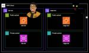

ForgeVision Engineer Blog
https://techblog.forgevision.com/
フォージビジョン エンジニア ブログ
フィード

AWS DMS × PostgreSQL でカラムが更新されない？実際にハマった原因と解決法
ForgeVision Engineer Blog
AWSグループのナガトモです。PostgreSQL のカラムでちょっとハマりましたのでシェアします！
6日前
Control Tower のデプロイが失敗する？原因は“クレカ未承認”だった話
ForgeVision Engineer Blog
こんにちは、尾谷です。AWS Control Tower setup falled. Be sure your account is subscribed to the AWS EC2 service, then tryagain. If this error persists, contact AWS Support.を調査しました。
7日前
Amazon SES Eメールテンプレートのあれこれ
ForgeVision Engineer Blog
こんにちは、AWSグループの平原です。 皆様は、一品ずつ出してくれるテンプラ屋さんに行ったことがあるでしょうか？ 私は最近やっと一品ずつ出てくるテンプラ屋さんに行きました。ファミレスで食べるテンプラとはやはり違いを感じました！ といったところで今回は、Amazon SES のEメールテンプレートを使用したときのあれこれを記事にします。 Eメールテンプレートを利用して定型的なメールの送信を考えている方、既に使用している方の参考になれば幸いです。 はじめに 今回のEメールテンプレートの記事は、保存済みテンプレートを使用したときの内容になります。 保存済みテンプレートの制限 テンプレート作成可能最大…
13日前

画像処理技術を学びたい方向け資料公開！「画像解析の基礎から実践～独自開発の画像解析技術をプログラムの詳細まで一挙公開～」
ForgeVision Engineer Blog
こんにちは、営業部の鈴木です。 今回は、画像処理技術を学びたい方におすすめの資料を公開しましたのでお知らせいたします！ 弊社では「人は目で見て、脳でどう判断しているのか？」 元ソニーのハイビジョンTV開発エンジニアが長年の探求の末に考案した画像解析アルゴリズム「ABHB」活用し 汎用的なAIでは解決が困難な課題に対して、製造・医療・交通インフラなど様々な分野で採用いただいております。 本資料では、メルマガでもご好評いただいた4資料 ①ABHBの基本プログラム／前処理技術 ②色解析／明るさ(影)解析 ③領域特定／形状認識 ④歪補正 について、高度な画像解析を実現するABHBの基本概念から、実践的…
1ヶ月前
Amazon FSx for NetApp ONTAP のストレージコストを最適化するためのガイド
ForgeVision Engineer Blog
こんにちは、こんばんわ！クラウドインテグレーション事業部の魚介系エンジニア松尾です。 今回は Amazon FSx For NetApp ONTAP について、私が過去に経験したストレージコスト部分の躓きポイントと最適化する方法についてご紹介させていただきます。 はじめに Amazon FSx for NetApp ONTAP とは？ Amazon FSx for NetApp ONTAP のコスト構成 リソースのデプロイパターン SSD ストレージキャパシティ SSD IOPS スループットキャパシティ キャパシティプール キャパシティプールの読み取りリクエスト キャパシティプールの書き込み…
2ヶ月前
S3 Tablesのデータはどう更新する？INSERT・DELETE・UPDATE・MERGEを実践！
ForgeVision Engineer Blog
こんにちは、開発グループの寺田です。 本記事では、Amazon Athenaを使用して、INSERT・DELETE・UPDATE・MERGEクエリを実行し、S3 Tablesのデータ変更を検証します。 INSERT INTO DELETE UPDATE MERGE INTO まとめ INSERT INTO Athena IcebergのINSERT INTOは、Icebergテーブルに複数件のデータ登録が可能で、 スキャンしたデータ量に応じて課金されます。 INSERT INTO [db_name.]table_name [(col1, col2, …)] query それではレコードを数件登…
3ヶ月前
実践編②：マルチテナントSaaS開発を加速させるSaaS Builder Toolkit（SBT）の魅力
ForgeVision Engineer Blog
こんにちは、AWSグループの藤岡（@fuji_kol_ry）です。 本ブログ、マルチテナントSaaS開発ツールのSaaS Builder Toolkit (SBT)についてご紹介するシリーズ物の第3回です。 ここまでの2編（導入編、実践編①）を読んでいない方は、ぜひご一読いただければと思います。 No. 1、導入編：SBTの概要、アーキテクチャの説明 No. 2、実践編①：動作検証、テナント作成、ユーザー登録 No. 3、実践編②：認証を使ったCRUD操作、まとめ ※実装の紹介もあって長文のため、結論はコチラです！ techblog.forgevision.com techblog.forge…
3ヶ月前
S3 Tablesとは？ 初めてのセットアップ & クエリ実行
ForgeVision Engineer Blog
こんにちは、開発グループの寺田です。 本記事では、2025年1月に東京リージョンで利用可能になった「S3 Tables」 について、 AWSの公式チュートリアル「S3 Tables の使用開始」を実践した内容を紹介します。 S3 Tablesとは？ チュートリアルの実践 テーブルバケット作成＆AWS分析サービスとの統合 名前空間とテーブルの作成 テーブルにLake Formationの権限を付与 Athena で SQL を使用してデータをクエリ まとめ S3 Tablesとは？ S3 Tablesは、2024年12月3日 AWS re:InventのCEO Matt Garman氏のKeyn…
3ヶ月前
実践編①：マルチテナントSaaS開発を加速させるSaaS Builder Toolkit（SBT）の魅力
ForgeVision Engineer Blog
こんにちは、AWSグループの藤岡（@fuji_kol_ry）です。 前回の記事で、導入編として、AWSが提供するマルチテナントSaaS開発ツールのSaaS Builder Toolkit (SBT)についてご紹介しました。 今回は、実際にSBTを使ってSaaS基盤を構築や動作確認をして、SBTの使い勝手についてお伝えいたします。 なお本シリーズは以下の3部構成になっていますため、前回の記事を読んでいない方は、ぜひご一読いただければと思います。 No. 1、導入編：SBTの概要、アーキテクチャの説明 No. 2、実践編①：動作検証、テナント作成、ユーザー登録 No. 3、実践編②：認証を使ったC…
3ヶ月前
導入編：マルチテナントSaaS開発を加速させるSaaS Builder Toolkit（SBT）の魅力
ForgeVision Engineer Blog
こんにちは、AWSグループの藤岡（@fuji_kol_ry）です。 突然ですが、皆さんはSoftware as a Service（SaaS）の開発で、テナント管理や認証認可、オンボーディングなど、無いと困るけど有ったところで大きな競合優位性を付けにくい機能の提供で、想定以上に時間を掛けてしまった経験はないでしょうか。（私はあります） 一般機能（コントロールプレーン）の開発が負担となって、競合優位性となる中核（アプリケーションプレーン）の開発に注力しにくくなるのが、SaaS開発の大きなジレンマです。 そういった課題に対して、AWSから SaaS Builder Toolkit (SBT) が提…
3ヶ月前
【JAWS DAYS 2025】Gold Supporterとして参加します！
ForgeVision Engineer Blog
こんにちは。営業部の鈴木です。 今年もフォージビジョンは、2025年 3月1日(土) に池袋サンシャインシティで開催される「 JAWS DAYS 2025」にGold Supporterとして協賛します。 弊社の所属エンジニア・営業の4名がすでに運営として参加させていただいており、準備も着々と進んでおります。 昨年の様子はこちらから！ techblog.forgevision.com JAWS DAYSとは？ 主催 JAWS-UG（Japan AWS User Group）、後援 アマゾン ウェブ サービス ジャパン合同会社で行われる JAWS-UG 最大のイベントです。 全国の JAWS-U…
3ヶ月前
Amazon Bedrockを活用した3つのLLMカスタマイズ： ファインチューニング/事前学習/モデル蒸留
ForgeVision Engineer Blog
はじめに こんにちは、AWSグループの藤岡（@fuji_kol_ry）です。 生成AIやLLMの利用が広まる中で、特定のユースケースに合わせてモデルをカスタマイズする重要性が高まっています。 前回の記事では、SageMaker Autopilotを使用したファインチューニングについて紹介して、LLMのチューニングの魅力について触れました。 techblog.forgevision.com Autopilotの他にも、LLMを扱うAWSサービス・プラットフォームとして、Amazon Bedrockが非常に有名です。Bedrockでは、独自のデータやユースケースに基づいたカスタムモデルの構築が可能…
4ヶ月前
AutoMLでLLMを最適化する時代： Autopilotによる高効率なファインチューニング
ForgeVision Engineer Blog
こんにちは、AWSチームの藤岡です。 昨年末にAWSから、大規模言語モデル（LLM）に関する以下の記事が公開されました。 aws.amazon.com AutoMLツールであるSageMaker Autopilotを活用して、業界ドメインに特化したチューニングをオートメーションで行う方法を紹介しています。なかなか魅力的ですね！ そこで、本記事では、 AWSのオートメーション機能を使用したLLMのファインチューニングの手順と、RAGとの使い分けについて、ご紹介したいと思います。（結論はコチラです） ファインチューニングとは LLMのファインチューニングは、端的に説明すると、LLMに対してタスクや…
4ヶ月前
【コレクター必見！】これまでリリースされてきた AWS BuilderCards をご紹介します
ForgeVision Engineer Blog
こんにちは、AWS グループの尾谷です。 本ブログでは、これまでリリースされてきた AWS BuilderCards をご紹介します。 更新履歴 2025/03/03 JAWS DAYS 2025 で配布されたカードを追加しました。 本ブログが取り扱うもの インターネット上をググると、AWS BuilderCards の紹介や、遊び方などが解説されたブログを参照できますが、各エディションや、さまざまなイベントなどで配布されてきた 限定カードを取り上げた記事がなかったので、まとめてみたいと思います。 このブログで、全てのカードを網羅できていないと思いますし、AWS BuilderCards の …
4ヶ月前
AWSサービスで完結した外形監視のアプローチを整理・比較してみた
ForgeVision Engineer Blog
こんにちは、AWSグループの藤岡です。 Webサービスにおける外形監視は欠かせませんが、「サービス的にそこまで凝った監視は要らない」「プロジェクト規模的に高額なオブザーバビリティサービスを導入できない」といった場面はよくあると思います。 そういった時に有効なアプローチとして挙げられるのが、AWSのサービスを活用した、安くかつAWSで完結した外形監視を実現することです。 そこで今回は、AWSサービスで完結した外形監視のアプローチを3つご紹介します。 先に結論を書くと 執筆時点でのAWSサービスを使うと、長所・短所が異なる以下3つの外形監視アプローチが有効です。 監視要件、コスト、運用手間を踏まえ…
4ヶ月前
【re:Invent 2024】AWS 新 CEO Matt Garman のビジョンとは？re:Invent 2024 キーノート徹底解説！
ForgeVision Engineer Blog
こんにちは、AWS グループの尾谷です。Matt さんの Keynote を視聴して感じたことを語ってみます。
5ヶ月前
【re:Invent 2024】Amazon Novaで6秒ムービーを作成してみた
ForgeVision Engineer Blog
こんにちは、AWS グループの菊池です。 re:Invent 2024で新しい生成AIモデルのAmazon Novaが発表されました。 モデル名 概要 Amazon Nova Micro テキスト。低コスト低遅延 Amazon Nova Lite テキスト、画像や動画などマルチモーダル対応 Amazon Nova Pro テキスト、画像や動画などマルチモーダル対応 Amazon Nova Premier 複雑な推論に対応（2025年提供予定） Amazon Nova Canvas テキストから画像を生成 Amazon Nova Reel テキストから動画を生成 今回、このAmazon Nova…
5ヶ月前
AWSのAI/MLをキャッチアップするには、3つの資格取得を活用するのが効率的
ForgeVision Engineer Blog
AWSグループの藤岡（@fuji_kol_ry）です。 先日開催されたre:Invent 2024 で、数多くの生成AIや機械学習サービスが発表されました。あまりに数多くの発表があって、キャッチアップもなかなか大変です。 そういった中で必要不可欠なことは、AI/MLの基本的な知識と思います。 そこで私は、最も効率的に基礎知識を習得するためのアプローチの1つが資格取得にあると考え、先月11月に一気にAWSの機械学習系の資格3つ（AWS Certified AI Practitioner、AWS Certified Machine Learning Engineer - Associate、AWS…
5ヶ月前
【コンテナ運用が楽々に！】Amazon CloudWatch Container InsightsでのECSのオブザーバビリティが強化されました
ForgeVision Engineer Blog
こんにちは、AWSグループの藤岡（@fuji_kol_ry）です。 AWS re:Invent 2024 にて、Amazon CloudWatch Container Insightsにおける Amazon ECS（Elastic Container Service）のオブザーバビリティ機能の強化が発表されました。 aws.amazon.com 私自身、複数のお客様でコンテナ活用を支援しており、このAmazon CloudWatch Container Insights（以降はContainer Insightsと記載）の発表はとても興味を惹かれました。 そこでこの記事では、既存のContai…
5ヶ月前
【re:Invent 2024】Aurora の Deep Dive セッションを受講したら、DSQL まで学べた話
ForgeVision Engineer Blog
こんにちは、AWS グループの尾谷です。re:Invent で Aurora の Deep Dive セッションを受講したら、DSQL まで学べたのでアウトプットします。
5ヶ月前
【re:invent 2024】タトンカ復活！ Amazon's World Famous Chicken Wing Eating Contest
ForgeVision Engineer Blog
こんにちは、AWS グループの尾谷です。 本日、タトンカチャレンジにやっと参加できました。 「長かった。会いたかったよ、タトンカ。。」 2019 年に初めて re:Invent に参加したとき、弊社社員がタトンカチャレンジに出場しているのを応援しました。 ちなみに、当時のフラッグはオフィスに飾ってあります。 次は僕も出場しようと心に決めて、翌年の開催を心待ちにしていましたが、2020 年がコロナ渦でオンライン開催となり、2021 年は参加できず、2022年、2023 年は参加させていただきましたが、衛生面の問題があったのか、いずれもタトンカチャレンジは開催されませんでした。 そのため、5 年ぶ…
5ヶ月前
2月15日まで！スベっても無料で再受験できると聞いて AWS Certified AI Practitioner (AIF-01) の認定試験を受験してきました
ForgeVision Engineer Blog
こんにちは、尾谷です。2月15日まで！スベっても無料で再受験できると聞いて AWS Certified AI Practitioner (AIF-01) の認定試験を受験してきました
6ヶ月前
Okta CIC(Auth0) のForms で遊んでみた ～ 性格診断アプリ
ForgeVision Engineer Blog
Okta CIC Forms を使って、性格診断アプリを作ってみた こんにちは、山崎です。 今回は、 柔軟な開発が出来るログイン管理サービス の Okta CIC の活用法について紹介します。 今回は Okta CIC の Forms 機能を使って、ID管理とは全然関係ない性格診断アプリを作ってみた内容を紹介します。 （Oktaさんに怒られないかなぁ…） ※ちょっと宣伝 当社は Oktaのパートナー です！ Okta CICの導入支援、関連アプリ開発サービスをしておりますので、 本記事で興味が出た方はぜひお問い合わせください！ 注釈 本記事では下記の文言の統一をしています。 ログイン管理 : …
6ヶ月前
Orca Security の Purge と Purge タイミングについて
ForgeVision Engineer Blog
こんにちは、Orca Security 担当の尾谷です。今日は、Orca テナントからクラウドアカウントを切断する際に発生する Purge について検証した内容をアウトプットします。
6ヶ月前
Okta CIC(Auth0) の ”Actions”を理解する！
ForgeVision Engineer Blog
Okta CICのActions って色々出来るけどよくわかんない！ Actionsの自分なりのメモ こんにちは、山崎です。 今回は、 柔軟な開発が出来るログイン管理サービス の Okta CIC の活用法について紹介します。 今回は、いろいろ出来て便利だけど、難しい "Actions" 機能についての自分なりのメモです。 ※ちょっと宣伝 当社は Oktaのパートナー です！ Okta CICの導入支援、関連アプリ開発サービスをしておりますので、 本記事で興味が出た方はぜひお問い合わせください！ 注釈 本記事では下記の文言の統一をしています。 ログイン管理 : アクセス管理、アイデンティティ管…
6ヶ月前
Okta CIC(Auth0) で プログレッシブプロファイリング② ～開発手法での比較編
ForgeVision Engineer Blog
プログレッシブプロファイリングの実装、２つの方法がある？ こんにちは、山崎です。 今回は、 柔軟な開発が出来るログイン管理サービス の Okta CIC の活用法について紹介します。 今回は、プログレッシブプロファイリングを実装を検討する際の Okta CIC を使って本当に楽になるの？ Okta CIC で２つの実装方法(Custom Actions、 Forms )があるけど何が違うの？ っというあたりの比較記事です。 ※ちょっと宣伝 当社は Oktaのパートナー です！ Okta CICの導入支援、関連アプリ開発サービスをしておりますので、 本記事で興味が出た方はぜひお問い合わせください…
6ヶ月前
Okta CIC(Auth0) で プログレッシブプロファイリング ①～そもそもプログレッシブプロファイリングって何？編
ForgeVision Engineer Blog
Okta CICってログイン管理だけじゃないの？顧客データ収集の手法の紹介 こんにちは、山崎です。 今回は、 柔軟な開発が出来るログイン管理サービス の Okta CIC の活用法について紹介します。 今回は、Okta CIC で出来る顧客データ収集方法であるプログレッシブプロファイリング についての記事です。 ※ちょっと宣伝 当社は Oktaのパートナー です！ Okta CICの導入支援、関連アプリ開発サービスをしておりますので、 本記事で興味が出た方はぜひお問い合わせください！ ※注釈 本記事では下記の文言の統一をしています。 ログイン管理 : アクセス管理、アイデンティティ管理、IDa…
6ヶ月前
【re:Invent 2024】AWS re:Invent 2024 関西組 事前勉強会に参加してきました
ForgeVision Engineer Blog
こんばんは、AWS グループの尾谷です。 今日は、堂島にある TIS 株式会社 さんがご用意くださった会場で開催された「AWS re:Invent 2024 関西組」に参加しました。 awsbuilder.connpass.com 会場には、今年 re:Invent に初参加する予定の人が 15 名ほどいらっしゃって、懇親会では、フレッシュなお話もお聞きすることができました。 皆さんに確認を取れなかったので、登壇された方の会社名やお名前は伏せておりますが、どなたの話も「さすが関西！」でした。非常に面白かったです。 参加 4 回目の僕が得られた情報なので、すごく限定的ですが、サクッと紹介させてい…
6ヶ月前
IAM がすべての商用リージョンで AWS PrivateLink のサポートを開始しました
ForgeVision Engineer Blog
こんにちは、AWS グループの尾谷です。 IAM がすべての商用リージョンで AWS PrivateLink のサポートを開始しましたということで、どこまでサポートされているのか検証をしてみました。
7ヶ月前
JAWS FESTA 2024 そして 西条酒まつりに参加してきました
ForgeVision Engineer Blog
こんにちは、AWS チームの後藤です。 今回は、JAWS FESTA 2024 in 広島への参加について報告したいと思います。 結果からお伝えすると、飲みニケーションを存分に楽しませていただきました。普段は引っ込み思案ですが、このイベントで AWS 界隈の新しい顔見知りを増やすことができました。次に控えている re:Invent 2024 や、その後のイベントで、今回お話しした方々と再会できることが楽しみです。 参加経緯など このイベントは、JAWS DAYS 2024 に参加した際に初めて知りました。お酒を楽しめるということで、参加意欲が湧きました。当初は、AWS Summit や JAW…
7ヶ月前